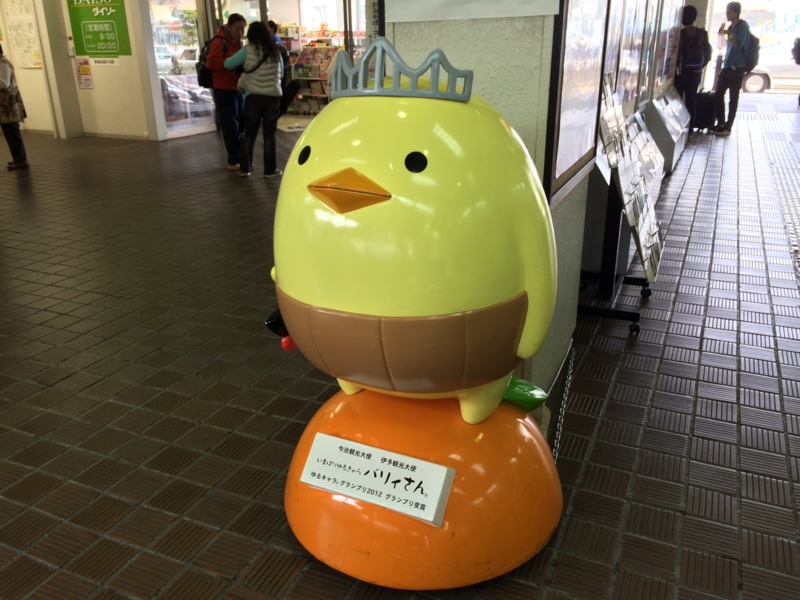
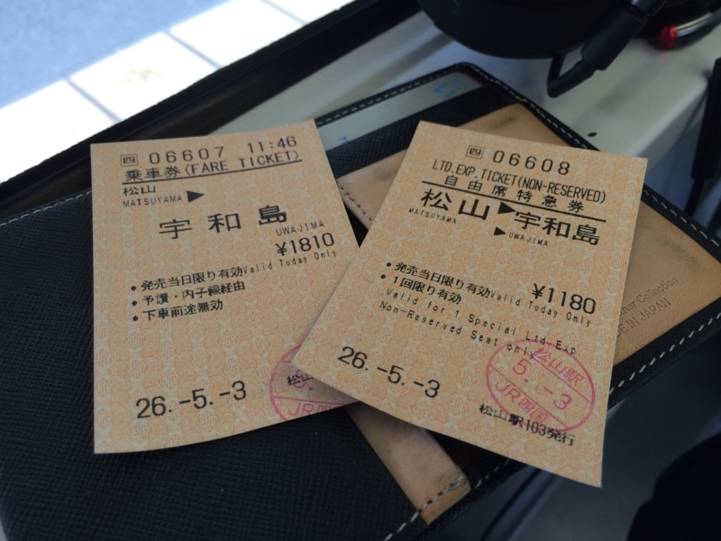
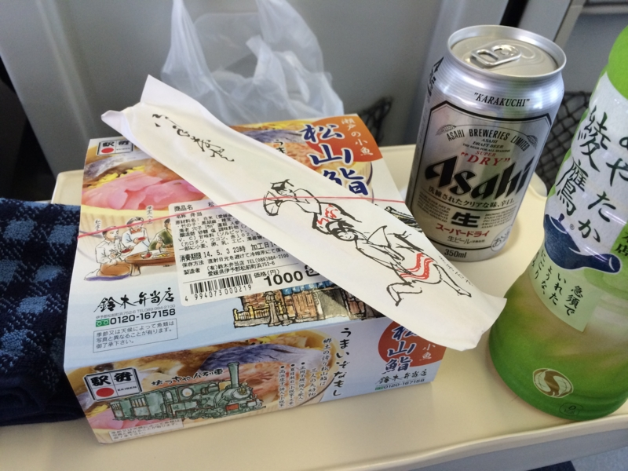
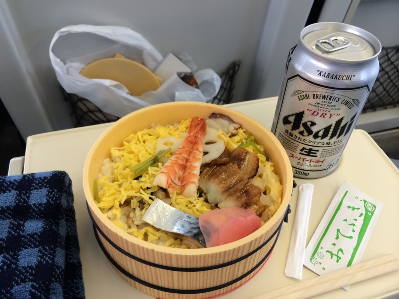
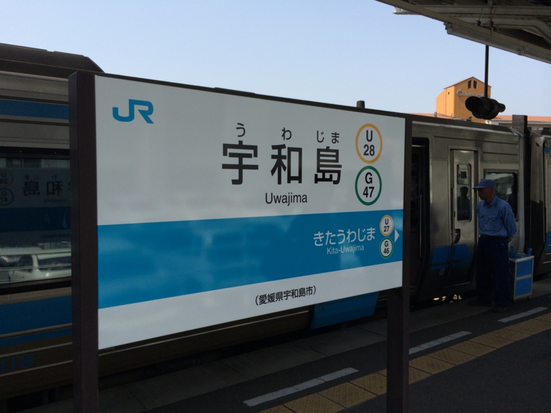
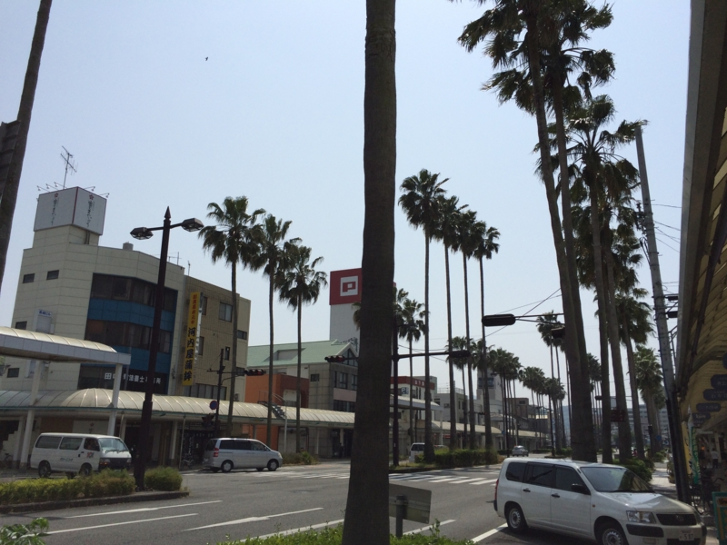

GW: ぶらりと宇和島行ってきたった。
公開日：
5月3日の10時ごろか、無事“艦これ”のイベントをクリアしたので、シャワーを浴びてぶらりと宇和島へ出かけた。ブログネタひとつない GW を過ごしたのでは、あまりにも自分が惨めだからである。親父も誘ってみたが、外へ出るのがめんどくさいとの由。久しぶりの一人旅で、羽が伸ばせる。

（松山駅にいる今治のゆるキャラ、バリィ氏。松山とは関係ないが、なぜか駅にいる）
松山にきて3ヶ月ほど経つが、松山駅から JR（地元では汽車と呼ぶ）に乗るのは実は初めて。岡山まで特急もあるのな。今回はそれとは逆向きだけど、次は岡山まで行ってみるのもありかもしれない。

宇和島までの特急券・乗車券を購入。松山から2,990円、少し高く感じるが1時間半乗るならこんなものか。

12:27 初の宇和島行特急「宇和海（うわかい）」に乗る。宇和海というのは、宇和島画面している海の名前だ。自分は知らなかったのだけど、瀬戸内海沿岸と宇和海沿岸ではちょっと気候が違うのだそうだ。瀬戸内海沿岸の愛媛県はあまり雨が降らず、夏季には渇水に見舞われることも少なくない。一方で、宇和海に面する南予地方は、割りと雨が降るらしい。夏にはお水を分けていただくことになるのやもしれぬ、あまり足向けて寝られないな。
ほんとはお昼ご飯を宇和島で食べたかったが、ちょっとそれは無理みたい。代わりに、ホームで“松山鮨”の駅弁を買った。価格1,000円也。奮発して、冷たい麦の汁も購入。これで万全だ。列車の乗車率は8割から9割程か。席は二人掛けなのに、俺の隣だけ空いている。いつものことなのでなるべく気にしないようにする。俺みたいなきたねえおっさんが隣に座ってくるよりは、一人の方がなんぼかマシだ。

(＾ω＾) ｳﾒｪ……
予讃線が電化されているのは松山駅の5駅先、伊予市駅まで。伊予氏から向こう、宇和島駅までは文明の恩恵に浴していない。そのため、列車はディーゼル車だ。おなかの底へブルブルと不快な振動を叩き込みながら、ギューっと野蛮に加速する。でも、たまにはこういうのもありかもしれない。松山駅を出て15分ほどで、車窓はすっかり緑一色になった。伊賀の故郷を少し思い出す。
ﾋﾞｰﾙ(＾ω＾) ｳﾒｪ……
景色を眺めたり、本を読んだりしているうちに、少し眠ってしまったようだ。目が覚めたら、列車は止まっていた。上りの特急列車とのすれ違いなのだという。単線なのに気づいてなかった。

1時間半ほどして、宇和島駅に到着。次駅の掲示がないということが、地の果てについたという実感を俺様に与えてくれる。

改札から出ると、そこは南国だった。なんやこれ、ヤシの木か。めっさ背が高いな。昼飯どきをすっかり外してしまっているので、何もすることがない（まぁ、駅弁食ったんだが）。まったくもってなにしに来たんだか……わしは途方に暮れてしまった。
――気が向いたら続く。